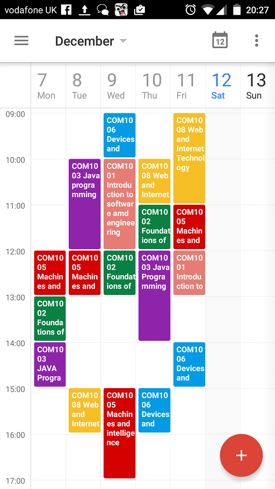

My modules
My modulesCan you find the menu?

MENU
COM1001 Introduction to Software and Engineering
This module introduces the Software Engineering concepts that are needed to develop software systems that can meet basic functional requirements within a given problem domain. It covers the main steps in the process of developing such systems, from requirements analysis through to their implementation and testing.
A major part of the module involves students working in teams to develop a web-based software system, which gives practical experience in teamwork and managing software projects and their products.
COM1002 Foundations of Computer Science
The course consists of (around) 10 blocks of 2-3 weeks work each. Each block develops mathematical concepts and techniques that are of foundational importance to computing. Lectures and problem classes will be used. The intention is to enthuse about these topics, to demonstrate why they are important to us, to lay the foundations of their knowledge and prepare students for future computing courses. It is not expected that the course will cover ALL the maths that is needed later either in terms of depth or scope.
COM1003 Java Programming
This module introduces programming concepts through the Java programming language. Program design and the use of testing to drive program creation are also covered. Initial focus is placed on the structured aspects typical of many programming languages: the ideas of a sequence, selection and repetition. The object-oriented approach to building large software systems from components is then presented. Throughout the module, emphasis is placed on the practice of writing well-structured and readable programs to solve problems.
COM1005 Machines and Intelligence
This module provides an introduction to Artificial Intelligence, and to key concepts and problems in the field, such as whether a computer is capable of understanding, and whether humans should themselves be viewed as machines. It also provides a brief historical overview of the subject and reviews the state-of-the-art and open questions in some of the major subareas of AI, pointing out connections to research work in the Department. As well as providing a first encounter with the main issues that underlie attempts to create Artificial Intelligence, the module also has a more practical component that introduces algorithms and data structures for AI problem solving through practical programming examples, as well as hands-on experience with simple programming of humaoid robots. The emphasis here is on identifying the abstract nature of the problem which is to be solved, matching this to an appropriate algorithm or technique and implementing a solution. It also serves as an introduction to programming for research rather than for software engineering.
COM1006 Devices and Networks
This module runs throughout the academic year, starting in Autumn and ending in Spring. The module consists of two parts. In the first, important elements of computer architecture are covered including digital logic, computer arithmetic and instruction set architecture. The approach in the module is to show how the basic elements of a computer are constructed and combined to give sophisticated architectures that support accelerated performance via cache memory and pipelining. The second half of the module shows how computing devices can be connected into networks, and covers the principles of layered protocols, error detection/correction and reliable transmission over networks.
COM1008 Web and Internet Technology
This module is for students studying Computer Science as a main subject. The Web and the Internet are now pervasive in modern life, providing an information resource, supporting 'cloud computing', and promoting novel, interactive solutions to computing-related activities. This module will cover the basics of networks and internetworking, the Web in society, including information security and the technologies that are used in Web development, with an emphasis on building a simple interactive website using HTML, CSS and JavaScript